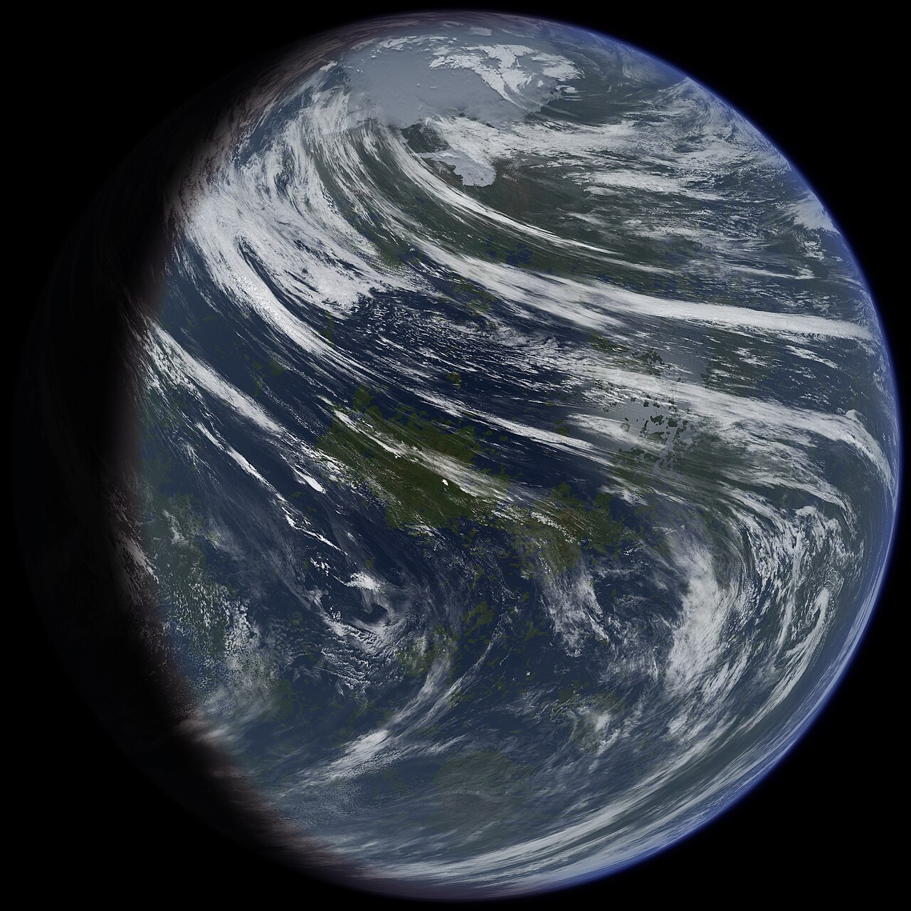

| Tesla | ||||||||||||||
 |
||||||||||||||
| Goberno | ||||||||||||||
|
||||||||||||||
| Información | ||||||||||||||
|
A Repúbrica Democrática e Federada de Tesla, A Repúbrica de Tesla, O Praneta Miñeiro, ou simplemente Tesla, é un dos 50 mundos que conforman o Comisariado de Eridanus. Está situado na parte occidental do anelo central da Vía Lactea. Posúe unha lúa, e polas súas condicións é un planeta moi similar á Terra. Ademais, xunto a iste, é un dos dous mundos con reservas de cobre coñecidas.
É o terceiro mundo mais grande do Comisariado por poboación, detras da Terra e de Nova, o segundo por economía, e o cuarto por superficie. A súa capital é Providenco, e está dividido en 34 rexións. O canciller é escollido por votación directa cada 6 anos.
A primeira nave aterriza en Tesla o 10 de Outubro de 2278, para comenzar os sondeos coa intención de iniciar un proceso de colonización. Uns 7 anos despois, o 14 de Outubro de 2285, comezan a aterrizar as naves coloniais. A primeria delas deu lugar a actual cidade de Providenco.
 |
Fotografía do praneta dende o espazo. |
O proceso de colonización de Tesla foi, inicialmente, lento. O clima tropical facía que varias enfermidades exóticas proliferaran, e desmotivaban aos colonos a vir explotar a terra. Sen embargo, o 21 de Agosto de 2289, a compañía miñeira de Marte estaba levando a cabo un sondeo en busca de silicio cando atopou unha vena de cobre. Varias exploracións subsecuentes confirmaron que arredor do praneta se podía encontrar cobre en abundantes cantidades.
A noticia correu arredor do comisariado en tempo record, e ducias de empresas miñeiras se empezaron a interesar por abrir explotacións en Tesla. Cando os permisos para as explotacións se empezaron a conceder, os colonos comezaron a chegar rápidamente, dando lugar ao que se coñece coma a febre do cobre.
Durante ista estapa, que durou entre 2290 e 2311, crearonse multitude de asentamentos por todo o planeta debido a necesidade de ampliar a actividade miñeira. Foi durante iste periodo que o goberno central decidiu nacionalizar a actividade miñeira en Tesla, creando así a Compañía de Mineria de Tesla, que se estableceu na daquela recen creada cidade de Urbo.
Niste periodo de 20 anos, a poboación do planeta pasou de 3 millóns a 880 millóns, en gran parte debido á inmigración dende outros pranetas. Aproximadamente o 85% dos asentamentos actuais do praneta se fixeron niste periodo.
Considerase que a febre do cobre finalizou coa conformación de Tesla coma a Repúbrica Democrática e Federada de Tesla.
Tesla foi o decimonoveno mundo en unirse ao Comisariado coma repúbrica. O día da súa conformación, o 31 de Maio de 2311, coma era costume, declarouse festivo en todo o Comisariado, e quedou marcado coma o día nacional de Tesla.
Cando en 2354 comeza a Rebelión dos polos, Tesla mantense leal ao Comisariado. Durante todo o conflicto, o goberno de Tesla temía unha posile protesta coma a que sucedera en Meca, que nunca aconteceu. O mundo apenas participou no conflicto, sendo o segundo mundo que menos poboación enviou a loitar, e o primeiro que menos enviou cando se considera per capita.
O clima de Tesla é relativamente húmido e cálido, o que da como resultado unha gran abundancia de selvas tropicais e densos bosques. Nas rexións mais ecuatoriais, onde se encontran cidades coma Urbo, as costas adoitan estar dominadas por pequenas illas separadas por correntes mariñas ou amplos ríos. Istas illas adoitan ser chás, e sufren de inundacións nas temporadas de furacáns. Debido ó eixo de rotación do planeta, os furacáns adoitan moverse de leste a este.
Nas rexións tropicais o clima vólvese mais suave, pero ainda así as temperaturas baixo cero son raras, inclusive en inverno. Os anos propios duran 329 días, e as estacións entre 82 e 83 días.
Inclusive nos polos, só neva durante o inverno, mantendo unhas temperaturas frías pero sobre cero o resto do ano. O polo sur non conta con terra mais alá dunhas pequenas illas, mentres que o polo norte conta cun pequeno continente, onde se ubica a cidade de Providenco.
A temperatura mais baixa rexistrada no planeta foi de -23,76ºC, no polo sur, mentres que a mais alta foi de 47,87ºC, rexistrada no deserto D'ouro. A temperatura ponderada do planeta é de 21,32ºC.
O mundo non conta con formacións montañosas destacables, estando dominado por outeiros e chairas. A maioría de montañas que se poden encontrar son volcáns inactivos, con algunhas excepcións que se tratan de grandes colinas graníticas. O mundo case non conta con actividade xeolóxica, e as súas pracas tectónicas móvense unha media de 2 milímetros ao ano.
Tesla é un dos mundos que menos tempo tarda en ter eleccións para Canciller, sendo só superado por outros mundos que teñen unha poboación moi inferior á súa. Coma é costume, conta cun sistema bicameral. As súas rexións tamén teñen un sistema bicameral, e tamén escollen lider cada 6 anos. Antigamente, era común que coincidiran as eleccións municipais, locais executivas, locais lexislativas, mundiais executivas, mundiais lexislativas e de Canciller, pero diversas eleccións adiantas foron facendo que iste fenómeno fora menos común co paso do tempo.
O panorama demográfico de Tesla é moi singular. Na súa lista de cidades destacan as colosais Providenco (150 millóns) e Urbo (80 millóns) coma cidade mais poboada e segunda cidade mais poboada. Mentres, a terceira ciudade tesla mais poboada trátase de Feva, con apenas 5 millóns de habitantes. A distribución de poboación do planeta está mais ben centrada en cidades medianas, de entre 1 e 5 millóns de habitantes, arredor dos xacementos de cobre mais importantes.
Isto resulta nun texido urbano que se nota en falta, e nun rural moito mais desenvolvido. Como resultado, o planeta está altamente interconectado por tren.
A economía de Tesla está altamente diversificada, pero o sector mais importante dista é a mineria. As diversas minas de cobre que existen no planeta son o factor que permitiron que o mundo contara cunha cantidade de diñeiro que lle permitiu desenvolver de forma potente a súa economía.
Hoxe en día, a exportación principal de Tesla son productos derivados do cobre (21,35%), seguido de productos tecnolóxicos (17,66%), productos agrícolas (12,09%), outros minerais (9,83%) e outros productos varios (39,07%).
| Tesla | ||||||||||||||
|
||||||||||||||
| Goberno | ||||||||||||||
|
||||||||||||||
| Información | ||||||||||||||
|